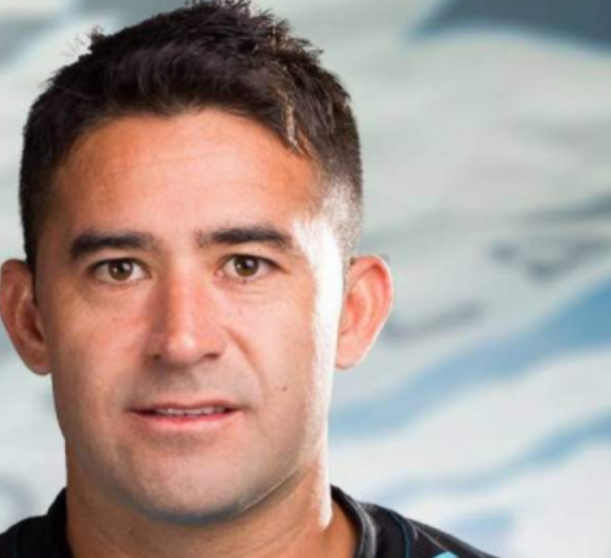

En el partido de Independiente del Valle vs Fuerza Amarilla se produjo el estreno como titular del argentino-ecuatoriano Claudio Bieler uno de los mas destacados y cuyo aporte se noto en la cancha
Ultimo Fichaje
Claudio Bieler
Claudio Bieler cumplia casi con todos los requisitos. La dirigencia de Independiente del Valle buscaba un jugador de jerarquia y mediatico para la temporada 2019. El delantero de 35 años estuvo en la mirada del club desde hace mas de seis meses. Claudio, el "Taca" Bieler fue presentado en el Independente del valle la mañana de este lunes 25 de marzo del 2019. El delantero argentino, nacionalizado ecuatoriano se sumara al plantel dirigido por el español Ismael Rescalvo para disputar del campeonato nacionalizadoy el partido de vuelta de la primera ronada de la Copa Sudamericana.  El ariete argentino-ecuatoriano tiene contrato hasta diciembre del presente año. Sin embaggo, la directiva quisiera continuar con el atacante. Bieler vivira en uno de lso valles que rodea a Quito. Por el momento, vive en las intalaciones del Club
Ultimos Fichajes
- San Martin
- Belgrano
- Kansas
- Quilmes
- Colo Colo
- Colon
Tabla Fichajes
| Temporada | Fechas | Clubes | Valor | |
|---|---|---|---|---|
| Ultimo Club | Nuevo Club | |||
| 18/19 | 20/03/2019 | San Martin | Independiente | 450000 $ |
| 17/18 | 07/08/2017 | Belgramo | San Martin | 800000 $ |
| 15/16 | 06/01/2016 |  Quilmes Quilmes |
Belgramo | 800000 $ |
| 14/15 | 20/01/2015 | Kansas | Quilmes |
1.50 mill-$ |